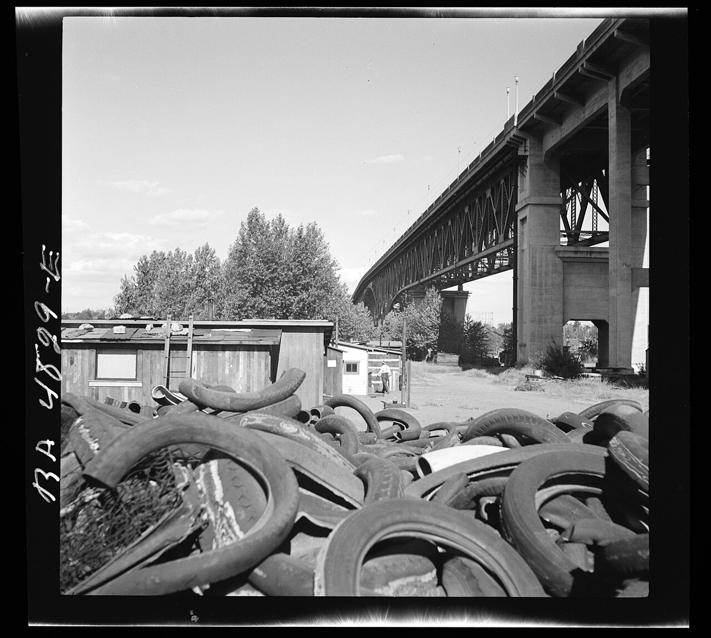
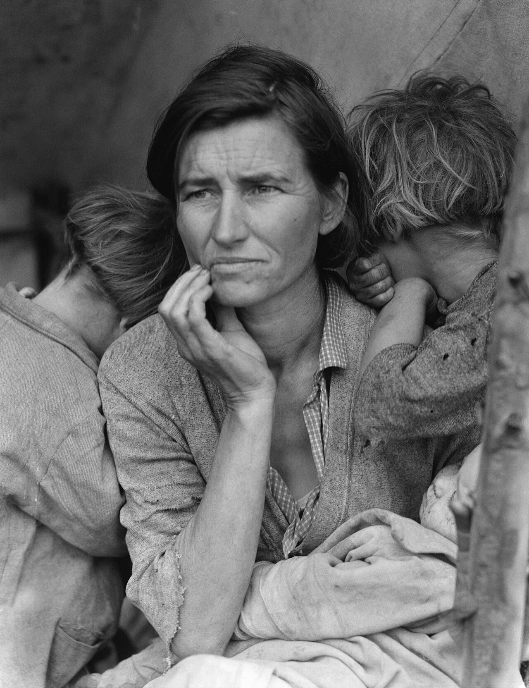

Directions: Work through the five stations in order. Each station holds one kind of evidence about the Depression: an unemployment series, a bank failure record, a Hooverville photograph, a migrant photograph and caption, and a family budget. Answer the questions at each station. At the end, build a ledger of the costs, sorted into money lost, homes lost, and plans lost, with each entry tied to a station.
Source: Historical estimates of the national unemployment rate, as later compiled from the records of the period. The government of the early 1930s counted unemployment loosely, so these figures are estimates, and the lesson treats them that way.
| Year | Estimated share of workers unemployed |
|---|---|
| 1929 | about 3 percent |
| 1930 | about 9 percent |
| 1931 | about 16 percent |
| 1932 | about 24 percent |
| 1933 | about 25 percent |
Unemployment counts people who are able to work and seeking work but cannot find a job. It does not count farmers whose crops failed to sell, workers whose hours were cut in half, or workers who had stopped looking. The human total behind the table is therefore larger than the percentages alone suggest.
By how many times did the estimated unemployment rate grow between 1929 and 1933? Show your arithmetic, and state the result in words a newspaper could print.
Name two groups of suffering workers whom this table does not count, using the station text, and explain what their absence means for how the table should be read.
Source: Teaching summary prepared for this lesson from the bank failure record of the period, with the failure counts below drawn from the standard federal record of bank suspensions. This station is a summary, not a transcription of one bank's file.
| Year | Banks that suspended operations |
|---|---|
| 1930 | about 1,350 |
| 1931 | about 2,290 |
| 1932 | about 1,450 |
| 1933 | about 4,000 |
A depositor's account of the period follows a pattern repeated in thousands of towns. A rumor reached the bank's depositors that the bank held farm loans that could not be repaid. Depositors gathered before the doors opened. The bank paid out cash all morning, sent to a larger city bank for more, and found that the city bank was protecting its own cash. By the middle of the afternoon the bank closed its doors. Deposits above what the bank could pay were frozen, and most were never fully repaid, because no federal deposit insurance existed. A family that had saved the price of a farm, a store, or a year of schooling could lose the whole of it in one afternoon without having borrowed anything or speculated in anything.
Walk through the afternoon in order. What turned a rumor into a closed bank, step by step? Name every step.
The family in the last sentence had saved carefully and borrowed nothing. What does its loss show about who the banking collapse reached? Answer in two sentences.
Source: Photograph by Arthur Rothstein for the federal Farm Security Administration, showing a Hooverville in Portland, Oregon, July 1936. Library of Congress.

A Hooverville was a shantytown built by homeless people from scrap wood, tin, and cardboard during the Depression, named in bitter reference to President Hoover. Camps stood on vacant land at the edges of many American cities. The largest held hundreds of families. Residents elected informal mayors, kept streets between the shacks, and built with whatever the city discarded. The camps had no running water, no sewers, and no legal claim to the ground, and a city could clear one whenever it chose.
Name three details in the photograph or the station text that show the camp was built to last longer than a night, and three details that show it was never meant to be a home.
The name Hooverville was an argument, not only a description. What argument did the name make, and to whom was it addressed?
Source: Photograph by Dorothea Lange for the federal Farm Security Administration, Nipomo, California, March 1936, with the caption recorded in the Library of Congress catalog. Library of Congress.

Lange was traveling for a federal agency that documented rural poverty and sent the photographs to newspapers and to Congress. The woman in the photograph, Florence Owens Thompson, was a migrant pea picker whose crop work had failed with the pea harvest. Families like hers had driven west from the Dust Bowl states and from other farm regions, hoping for field work in California. The photograph was printed in newspapers within days, and relief food was sent to the pea pickers' camp at Nipomo after its publication.
What work had this family depended on, and what had happened to it? Answer from the station text, and say what the family had already done before the photograph was taken.
The photograph was made by a government photographer and printed in newspapers. What happened at Nipomo after publication, and what does that sequence show about what a photograph could do in 1936?
Source: Teaching budget prepared for this lesson. The figures are round teaching figures in the range of a factory worker's monthly wage and common city prices of the early 1930s. They are not copied from one surviving family budget.
| Monthly item | With full time work | After hours and wages are cut |
|---|---|---|
| Wages brought home | $100 | $50 |
| Rent | $25 | $25 |
| Food | $40 | $28 |
| Coal and light | $10 | $7 |
| Clothing and shoes | $10 | $3 |
| Payments on furniture bought on time | $8 | $8 |
| Everything else, including savings | $7 | none |
The second column is not unemployment. It is the budget of a worker who still has a job, at half the hours and a lower hourly wage, a condition the unemployment table in Station 1 does not count. Rent and the furniture payment did not fall with the wage. Food, coal, and clothing absorbed the cut.
Which lines in the budget could not be cut, and which lines absorbed the whole cut? Add the cuts and show that they equal the lost wages.
If the second column lasts six more months, what two events does the budget point toward? Name them, and tie each one to a line in the table.
Build the ledger of the Depression's costs. Enter two costs under each heading. Each entry must name the cost and the station that documents it.
| Money lost | Cost and station | Cost and station |
|---|---|---|
| Money lost | ||
| Homes lost | ||
| Plans lost |
Close the ledger in a short paragraph. Which column of the ledger could private charity repair, and which columns could it not? Use evidence from at least two stations.
By how many times did the rate grow between 1929 and 1933? From about 3 percent to about 25 percent, a growth of a little more than eight times (25 divided by 3 is about 8.3). In newspaper words, unemployment grew roughly eightfold in four years, reaching about one worker in four.
Name two groups the table does not count. Any two. Farmers whose crops failed to sell, who were not counted as seeking wage work. Workers whose hours were cut in half, who still counted as employed. Workers who had stopped looking, who fell out of the count entirely. Their absence means the table understates the loss of income, and it should be read as a floor, not a total.
What turned a rumor into a closed bank, step by step? A rumor spread that the bank held farm loans that could not be repaid. Depositors gathered before opening and withdrew cash all morning. The bank sent to a larger city bank for more cash, and the city bank refused in order to protect its own reserves. With its cash exhausted and no federal insurance or lender behind it, the bank closed its doors, and deposits were frozen and mostly never fully repaid.
What does the careful family's loss show about who the collapse reached? It reached people who had taken no risks. A family could lose its whole savings in an afternoon without borrowing or speculating, because the failure sat in the banking system itself and not in the family's conduct.
Three details showing the camp was built to last, and three showing it was never meant to be a home. Built to last, any three: shacks assembled as standing structures rather than tents of cloth alone; streets kept between rows of shacks; informal mayors elected; hundreds of families in residence. Never meant to be a home, any three: construction from scrap wood, tin, packing boxes, and cardboard; no running water; no sewers; no legal claim to the ground, so the city could clear the camp at will.
What argument did the name Hooverville make? The name assigned responsibility. By attaching President Hoover's name to a shantytown, its residents and the newspapers argued that the president under whom the collapse deepened owned its most visible shame, and the argument was addressed to voters and to the president himself.
What work had the family depended on, and what had happened to it? The family depended on migrant farm labor, picking peas in California. The pea harvest had failed, so the work and its wages disappeared. Before the photograph, the family had already left a home region and traveled west to California in search of field work, which is the migration recorded in the reading's Dust Bowl account as well.
What happened after publication, and what does the sequence show? The photograph was printed in newspapers within days, and relief food was sent to the pea pickers' camp at Nipomo. The sequence shows that a documented image could move aid, and move public opinion, faster than the ordinary relief machinery of 1936, which is one reason the federal government employed photographers such as Lange and Rothstein.
Which lines could not be cut, and which absorbed the cut? Rent at $25 and the furniture payment at $8 did not fall. Food fell by $12, coal and light by $3, clothing by $7, and everything else by $7, so the cuts total $29. Even after those cuts the family's listed spending is $71 against wages of $50, leaving $21 a month that cannot be paid at all, which becomes debt, arrears, or a missed payment. Full credit requires the two fixed lines, the absorbing lines, and the $21 shortfall.
What two events does the budget point toward? Any two, tied to lines. Eviction, when rent at a fixed $25 can no longer be met from a $50 wage after food and fuel. Repossession of the furniture, when the fixed $8 payment is missed. A breadline or soup kitchen, when the food line has been cut to $28 for a family for a month. Doubling up with relatives, when the rent line fails entirely.
Money lost, any two tied to stations: wages stopped or halved (Stations 1 and 5); savings frozen and lost in a bank failure (Station 2); farm income lost when the pea harvest failed (Station 4). Homes lost, any two: eviction and foreclosure in the reading as recorded at Station 3's camp; the Hooverville itself as the replacement home (Station 3); the migrant camp at Nipomo (Station 4). Plans lost, any two: the farm, store, or year of schooling the Station 2 savings were meant to buy; marriage and children postponed, from the reading; schooling and a settled childhood for the seven children in the Station 4 caption. Closing paragraphs earn full credit when they argue that charity could address hunger in the money column for a time, as the Nipomo food shipment shows, but could not restore bank deposits, reopen factories, return farms, or rebuild homes at a national scale, which is the reading's public emergency claim.